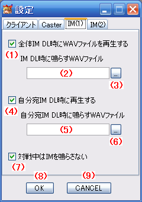

東方萃夢想 Alt Lobby System 東方萃夢想ロビーシステム(RC4) 操作説明 設定ウィンドウ IM(1)設定
はじめに
このドキュメントは、東方萃夢想 Alt Lobby Systemのテスト版の操作説明を簡略にまとめたものです。
アプリケーションと同様に本ドキュメントもテスト版であり、機能の説明やスクリーンショットなどは予告なく変更されることがあります。
設定ウィンドウ IM(1)設定

操作説明
- (1)全体IM DL時にWAVファイルを再生する
- チェックを入れた場合、新しい全体IMが届くたびに(2)で指定したWAVファイルが再生されるようになります。
- 全体IMと指定IMが同時にDLされる場合、こちらが優先されます。
- (2)IM DL時に鳴らすWAVファイル
- ここで指定したWAVファイルが、再生されます。WAVファイルのパスはフルパスで指定します。
- (3)の[…]ボタンでWAVファイルを参照できます。
- (4)自分宛 IM DL時にWAVファイルを再生する
- チェックを入れた場合、新しい自分宛IMが届くたびに(5)で指定したWAVファイルが再生されるようになります。
- (5)自分宛 IM DL時に鳴らすWAVファイル
- ここで指定したWAVファイルが、再生されます。WAVファイルのパスはフルパスで指定します。
- (6)の[…]ボタンでWAVファイルを参照できます。
- (7)対戦中は音を鳴らさない
- 上で設定をしている場合でも、対戦中の場合はIMのDL時にWAVを再生しません。対戦中にIMが届くと音が気になる場合にチェックを入れてください。
- (8)OK
- 設定を保存して、設定ウィンドウを閉じます。
- (9)CANCEL
- 設定を保存せず、設定ウィンドウを閉じます。
リンク
- 接続ウィンドウ
- http://th075altlobby.dip.jp/usage/connect_win.html
- メインウィンドウ
- http://th075altlobby.dip.jp/usage/main_win.html
- 設定ウィンドウ クライアント設定
- http://th075altlobby.dip.jp/usage/setting_win_client.html
- 設定ウィンドウ Caster設定
- http://th075altlobby.dip.jp/usage/setting_win_caster.html
- 設定ウィンドウ IM(1)設定
- http://th075altlobby.dip.jp/usage/setting_win_im1.html
- 設定ウィンドウ IM(2)設定
- http://th075altlobby.dip.jp/usage/setting_win_im2.html
- 東方萃夢想 Alt Lobby System (仮) 東方萃夢想ロビーシステム(b10) 操作説明
- http://th075altlobby.dip.jp/usage/
最終更新 : 2010-02-19 1:00
作成日時 : 2010-02-19 1:00
サイトトップ : http://th075altlobby.dip.jp/